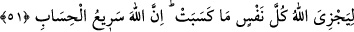
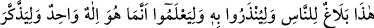
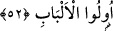

51. Allah herkese kazandığının karşılığını vermek için (onları diriltecektir.)
Şüphesiz Allah, hesabı çabuk görendir.
“Allah herkese kazandığının karşılığını vermek için” onları diriltecektir.
Bu ifâde mahzûf bir fiile müteallık olup takdîri şu şekildedir: “Allah bütün bunları
cehennemliklere her suçlu amelinin tam karşılığını alması için kazandığı (yaptığı) küfür
ve masıyet çeşitleriyle cezâlandırılmış olsun diye yapacaktır.
“Şüphesiz Allah, hesabı çabuk görendir.” Çünkü birinin hesabını görmek O’nu başka
birinin hesabını görmekten alıkoymaz. Bu sebeple O herkesin hesabını düşünülebilecek
en kısa zamanda bitirir ve hesaplarının karşılığını tam olarak verir. Ya da ‘çok hızlı bir
şekilde hemen gelen’ demektir.
et-Te’vîlât’ta şöyle denilir: “O gün,” o tecellî günü “günahkârları” ki bunlar
Hak’tan yüz çevirme ve şehvetlere uyma hususunda nefislere muvâfakat ederek onlara
tâbi olan suçlu ruhlardır. “Birbirlerine yaklaştırılarak” nefislerin kötü ve hayvânî
sıfatlarından olan “zincirlere vurulmuş” zincirlere, nefislerle birlikte bağlanmış bir
vaziyette “görürsün.” Allah’ın huzûruna çıkıp görünecek güçleri yoktur.
“Onların gömlekleri katrandandır” Gömlekleri, mâsıyet ve nefsânî karanlık
katranlarındandır. Bu katran gömlekleri yüzünden Allah’tan perdelenmiş bir hâldedirler.
“Yüzlerini de ateş bürümektedir.” Hasret, ayrılık ve mahrûmiyet ateşi bütün
benliklerini kaplamıştır.
“Allah herkese” yâni, her ruh nefisle berâberlik ve ona muvâfakat ile “kazandığının
karşılığını vermek için (yapmaktadır.) Şüphesiz Allah, hesabı çabuk görendir.”
Ruhların hesabını dünyâda iken çabucak görür. Nefislere tâbi olarak kazandıkları
körlük, sağırlık, cehâlet, gaflet, Allah’tan uzaklık ve bunlara benzer âfetlerin karşılığını
ise kıyâmet gününden önce verecektir.”
52. İşte bu (Kur’an), kendisiyle uyarılsınlar, Allah’ın ancak bir tek Tanrı olduğunu
bilsinler ve akıl sâhipleri iyice düşünüp öğüt alsınlar diye insanlara (gönderilmiş)
bir bildiridir.